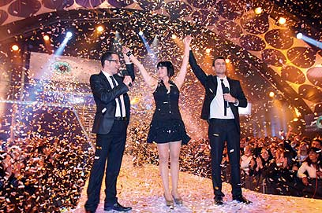

|
||
|
שער |
||
|
בובליל: שפרה עשתה לי רק רע
צילום: ליאור נורדמן
|
||
|
||


שנייה וחצי אחרי שיצאה מבית "האח הגדול", עינב יא וולי בובליל, הבחורה הכי "אשקלונית, מזרחית, קולנית, מצחיקה, וסקסית" במדינה, יורה לכל הכיוונים: על שפרה, על פרשת אבא והבחורה ובעיקר לא מעוניינת לייצג אף אחד מלבד את עצמה
נמרוד דביר
"יא וולי, כמה שאלות יש לך", נאנחת עינב בובליל אחרי שלוש שעות של שיחה חופרת. אבל מה לעשות, מדובר בבחורה מעניינת פלוס. עינב, ביחד עם יוסי אביה הקבלן, מוכר הבגדים הצבעוני ליאון והזוכה הגדולה, הדיילת/מעצבת שפרה, הם כרגע הנינט של המדינה.
במשך שלושה חודשים היו בובליל ושות' כלואים בבית "האח הגדול" במה שהיה הפריק שואו הכי חם בעיר. ממוכרת בגדים אלמונית מאשקלון הפכה בובליל לשיחת הסלון והברזייה של רובנו ולזו שהציתה במו ג'ורתה את הוויכוח מפלג העדות - פרידמן מול בובליל. בניגוד לקולגות ממדורי הרכילות, בובליל היתה כלואה במשך הזמן שסלבריטיותה צברה תאוצה. רק ביום שלישי שעבר היא יצאה מהבית (אחרי שזכתה במקום הרביעי) ושוחררה היישר אל תוך התופת.
"יש סביבנו מבול של אהבה" (צילום: ליאור נורדמן)
"אני בחוץ, אבל עדיין לא יודעת אפילו אחוז ממה שקרה", היא מספרת כשאנחנו נפגשים במשרדי קשת יומיים אחרי הגמר. "בקושי יצא לי לראות את התוכנית עד עכשיו. כל מה שאני יודעת זה מסיפורים ושמועות. יש מסביבנו טירוף, פשוט מבול של אהדה ואהבה. מאז שיצאנו אנחנו עם שומר ראש. אנשים באים אלינו הביתה מאילת, מירושלים, מבית שאן, כל אשקלון פקקים, אין דברים כאלה. לא שיערתי ולא דמיינתי שזה מה שיהיה. ליאון כל הזמן אמר 'בטח ייקחו אותנו לתוכנית אירוח אחרי שנצא', וכל הזמן אמרתי לו שהוא חי בסרט. בכלל חשבתי שאני חוזרת לעבוד בחנות בגדים".
חנות הבגדים באשקלון כנראה תצטרך לחכות. אנחנו יושבים במרפסת והטלפון הנייד שלה, שמונח על השולחן בינינו, לא מפסיק לרטוט. כל רגע נכנסת שיחה ממספר לא מזוהה ("אני מקבלת בערך אלף ביום"), או sms מפרגן בטירוף ("עינב, חולים עלייך! משפחת כדורי מהצפון"). היסטריה. בובליל, בשמלת מיני חושפנית, מפתיעה בהתנהגותה. כמישהי שזכתה במגה תהילה אינסטנט, הבחורה קולית כקוביית קרח. לא רק בראיון, גם אחריו, שמרה עינב על פאסון של מנצחים.
בצילומי "האחות הקטנה" היא התמודדה עם עדרי מעריצים כמדונה מיומנת, כשאפרת אברמוב, המנחה, ניסתה להסתלבט עליה הצליחה בובליל לייבש ולהשאיר את ותיקת הטלוויזיה פעורת פה ("פרידמנית, עוד מעט שבת ואני צריכה ללכת") וגם בצילומי השער התנהגה ככוכבת מנוסה, ולא כמישהי שנמצאת בשטח דקה ורבע. אולי זה קשור לכך שבובליל הכינה את עצמה לגרוע מכל: "באמת חשבתי שהתוכנית לא משהו בחוץ", היא אומרת אגב הדלקת עוד סיגרייה.
"זה התחיל מזה שחשתי מהדיירים החדשים שהתוכנית לא מצליחה ואז נכנסתי לסרטים. שתבין, בבית המוח הופך לחביתה. כל כך התבאסתי. הייתי אומרת - מה, איזה משעממים אנחנו. מה יראו? אותנו מעשנים? אבל אז ראיתי קטעים כשיצאתי החוצה, הם ערכו דברים, שמו מוזיקה ברקע. הפכו אותנו למעניינים".
אז עשו מניפולציות בעריכה?
"מה פתאום? אין ולא היו מניפולציות. הכל אמיתי, לפחות ממה שראיתי וממה שסיפרו לי. רק סידרו את זה קצת. גם לא קיבלנו מידע מבחוץ. כן, הייתי רואה צלמים לפעמים, נינג'ות, אבל לא מעבר לזה. לא קיבלתי בדל מידע. רק כשהתחילו לצעוק את השם שלי מבחוץ עם מגפונים הבנתי שמשהו קורה פה".
כמו כל סיפור טוב, גם זה של בובליל, 23, משלב הרבה מקריות. היא נולדה וגדלה באשקלון, בת יחידה בין שני בנים של יוסי וורד. אחרי לימודים בתיכון אורט ("מגמת סוציולוגיה וקרימינולוגיה") היא התגייסה לצה"ל, שם שירתה במשטרה הצבאית. אחרי השחרור עברה לתל אביב ועבדה בעבודות שונות. כעבור שלוש שנים נשבר לה מהעיר ("לא אהבתי יותר"), חזרה לבית הוריה, התחילה לעבוד בחנות בגדים מקומית, ושם התגלתה על ידי ניר בנו, מצוות המלהקים של קופרמן הפקות, חברת ההפקה העומדת מאחורי "האח הגדול", והשאר היסטוריה והיסטריה.
למה הלכת לתוכנית?
"ניגשו אליי בקניון, אמרו לי, 'שלום, את נראית בחורה מעניינת'. אמרתי שאני לא מעוניינת, אבל נתתי את הטלפון שלי. משם זה התגלגל, ראיתי שאני עוברת שלבים. פשוט זרמתי, לא תכננתי את זה. לאבא שלי הם הגיעו דרכי. הם באו לראיין אותי בבית, ראו אותו עם השטויות שלו ונדלקו".

"נתתי לשפרה יותר מדי קרדיט" (צילום: ליאור נורדמן)
בנו, המלהק שאיתר את עינב, מפרט: "עינב משכה אותי מההתחלה. סתם הסתובבתי בקניון וראיתי שיש בבחורה הזאת משהו, שהיא חיה בסרט ושיש לה אנרגיות מטורפות. ידענו שהיא תביא דרמה לבית, בגלל זה לקחנו אותה".
ועינב אכן הביאה דרמה. היא כנראה תיזכר לעד כבחורה שנכנסה ראש בראש בזוכה, שפרה, ובחבריה, במה שיתועד כריב הפרידמנים והבובלילים. "כן, הבנתי שעשו מאיתנו ומהקבוצה של שפרה יריבים", היא אומרת. "זה הדבר הראשון שכולם מדברים איתי עליו. ברור שהקצינו את זה, אבל כן, היו חילוקי דעות עם שפרה והחברים שלה מההתחלה. נתתי לשפרה יותר מדי קרדיט. לפעמים חשבתי שמשהו לא בסדר אצלי בראש, אבל משהו בלב אמר לי שהיא לא כזאת יפת נפש כמו שהיא מנסה להציג את עצמה. היתה לי הרגשה שהיא כל הזמן נכנסת לחדר 'האח הגדול' ומלכלכת עלינו. היא היתה נוראית. הבחורה הזאת עשתה לי במשך שלושה חודשים רק רע".
איזה רע היא עשתה לך?
"המון. המון. אתה לא היית שם, אתה לא יודע".
אבל ראיתי את התוכנית.
"לא משנה מה ראית. גם אנשים שהיו למעלה, בקונטרול, לא הבינו מה עובר עלינו. בוא נגיד את זה ככה, כשמנדים אותך מחברה, זה לא מעליב מספיק?"
אתם נידיתם אותה, לא?
"אנחנו לא נידינו אותה. באנו בראש פתוח, הם אלה שמההתחלה באו נגדי ונגד אבא שלי. היה מתח באוויר. תמיד אמרנו שאם היינו זורקים לכיוונם כדור, הוא היה פוגע ברשת דמיונית וחוזר. לא מצא חן בעיניהם שהגענו שניים, שזה כביכול כוח. וגם היה את כל הקטע העדתי, בגלל שאנחנו מזרחיים, בגלל שאני קצת קולנית והשפה של אבא שלי לא ברורה, בגלל שאנחנו יותר עממיים ושאנחנו לא מדברים כל היום במילים גבוהות".
"הם היו יושבים ומרכלים עלינו והיינו שומעים את הכל. זה לא בית ענק והיינו נחרדים לשמוע
אותם. אז כן, קראתי להם פרידמנים, אבל כל כך הוציאו את זה מפרופורציה. פרדימן זה מונח אשקלוני שמסמל מישהו עם משקפיים, חנון. זה לא אומר אשכנזי וזה לא אומר שכל האשכנזים הם פרידמנים. החברה הכי טובה שלי היא רוסייה. לאמא שלי קראתי פרידמנית".
"אין לי בעיה עם אשכנזים. בתוכנית זה יצא כאילו בקטע עדתי, אבל זה לא ככה. אני מבקשת שתכתוב - פרידמנים זה לא אשכנזים. וכן, בחודשיים הראשונים הרגשתי מקופחת, מאוד־מאוד־מאוד. איך לא ראית את זה? איך לא ראית שאני כל הזמן לבד? איך לא ראו שהם כל הזמן בשיחות שלהם, מנדים אותי, את אשר ואת אבא שלי?"
אבל בסוף ריחמו עליהם, הם היו המנודים.
"ולמה זה? כשהדיירים החדשים, שחר, יוני, אינה וחגית, באו, הם באו בסבבה. הם לא הכריזו 'אנחנו חברים של בובליל'. אני שואלת אותך שאלה - אתה בא למקום ויש אנשים שרוצים אותך ויש אנשים שלא רוצים אותך, למי תלך? שפרה קראה ליוני בהתחלה 'פולש'. 'פולש', אתה קולט? מה, הוא נכנס לבית שלה ושל האחיות שלה? היא קראה לשחר 'בהמה' בלי הרף! אז כן, בזמן שהם נכנסו הם נתנו לנו כוח. הם כאילו באו משמיים. אבל איך אפשר לשכוח את מה שהיה? איך אפשר לשכוח סבל של חודשיים? אבא שלי קרא לעץ ששפרה עמדה וסרגה 'פינת הדיכאון'. היו ימים שלמים שלא החלפנו אפילו מילה אחת. מילה".
את הכתבה המלאה ניתן לקרוא בגליון החדש של פנאי פלוס
| תגיות: עינב בובליל |